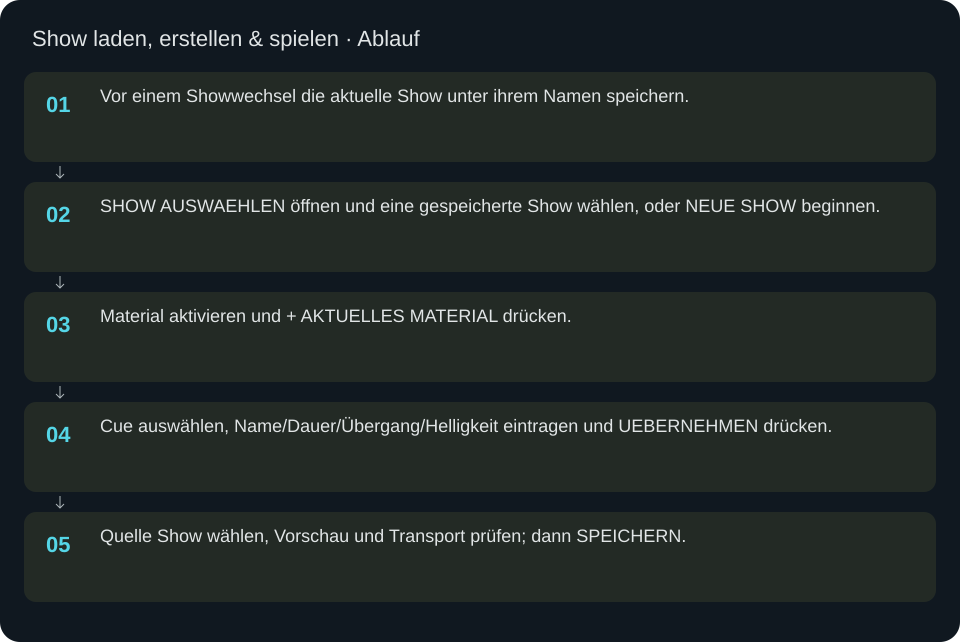
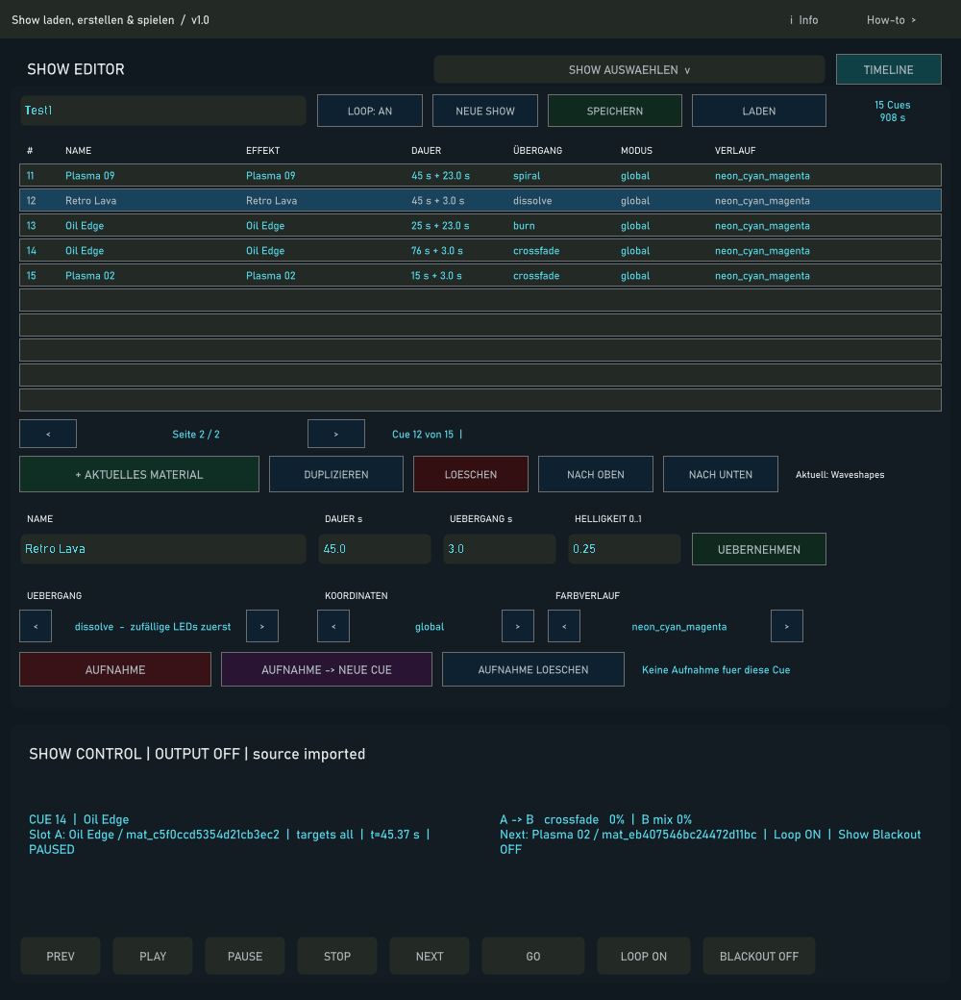
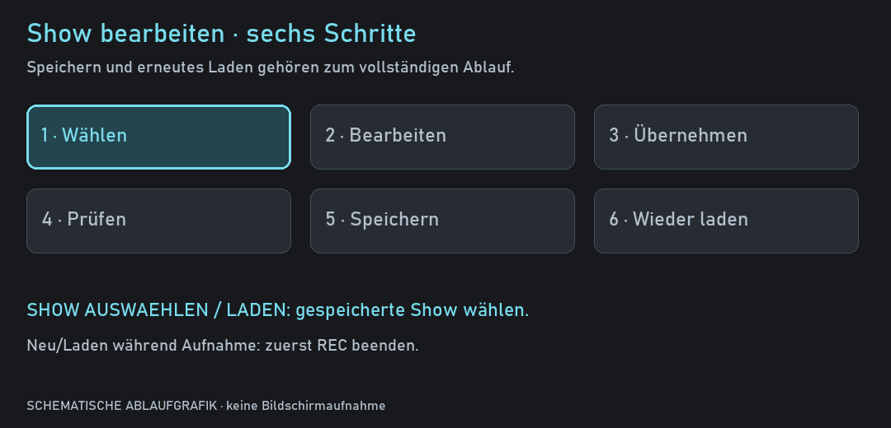

Show laden, erstellen & spielen
Shows bestehen aus geordneten Cues mit Material, Dauer, Übergang und optionaler Automation.
In welcher Reihenfolge?
- Vor einem Showwechsel die aktuelle Show unter ihrem Namen speichern.
- SHOW AUSWAEHLEN öffnen und eine gespeicherte Show wählen, oder NEUE SHOW beginnen.
- Material aktivieren und + AKTUELLES MATERIAL drücken.
- Cue auswählen, Name/Dauer/Übergang/Helligkeit eintragen und UEBERNEHMEN drücken.
- Quelle Show wählen, Vorschau und Transport prüfen; dann SPEICHERN.



Schritt für Schritt
Vorhandene Show auswählen
SHOW AUSWAEHLEN und LADEN öffnen dieselbe Auswahlliste validierter Show-JSONs mit Namen, Cue-Anzahl und Dateinamen. Mit Weiter/Zurück durch die Seiten gehen; die Auswahl lädt die Show mitsamt ihren verfügbaren Begleitdateien. Vor NEUE SHOW oder Laden zuerst speichern: ein Showwechsel ersetzt den aktuellen Editorinhalt. Während einer Aufnahme ist Laden/Neu gesperrt. NEUE SHOW leert Cues, Automation und Materialzustände; der vorherige Datensatz bleibt zusätzlich als Sitzungssicherung erhalten.
Eine Variante anlegen
Show laden, den Namen beispielsweise auf Schrank Abend v2 ändern und SPEICHERN drücken. Ohne Namensänderung wird die exakt ausgewählte Datei aktualisiert. Mit geändertem Namen entsteht ein neuer, aus dem Namen abgeleiteter Dateipfad. Unterschiedliche Schreibweisen können auf denselben Dateinamen fallen. Der Status zeigt den tatsächlich verwendeten Pfad.
Cues bearbeiten
Eine Zeile wählt die Cue zur Bearbeitung. + AKTUELLES MATERIAL übernimmt die aktuelle Materialauswahl. DUPLIZIEREN erstellt eine weitere Cue; LOESCHEN entfernt die ausgewählte Cue. NACH OBEN/NACH UNTEN ordnen sie um. Die Pfeile bei Übergang, Koordinaten und Verlauf wählen die verfügbaren Werte. Eingabefelder werden mit UEBERNEHMEN übernommen. Bei nicht auflösbaren Material-IDs zuerst Import oder Zuordnung reparieren.
Transport und Quelle
PLAY startet, PAUSE hält die aktuelle Position, STOP stoppt und setzt den Showtransport zurück. PREV/NEXT wechseln Cues; GO springt wie NEXT an den Anfang der nächsten Cue. Automatische Überblendungen entstehen aus der konfigurierten Showzeit. LOOP wiederholt die Show. BLACKOUT schaltet das Showbild schwarz; ALL OFF im Router beendet die Netzwerkausgabe. Quelle Show ist separat erforderlich, damit das Showbild im LED-Pfad liegt.
Automation aufnehmen
Zuerst das Material der gewünschten Cue im Player bereitstellen. AUFNAHME startet eine Aufnahme in die ausgewählte Cue; AUFNAHME → NEUE CUE erzeugt dafür eine neue Cue. Währenddessen gemeinsame beziehungsweise unterstützte native Parameter verändern. Aufnahme erneut drücken zum Beenden. Den Hinweistext auf leere oder blockierte Aufnahmen prüfen, dann Timeline öffnen und Kurven sowie Wiedergabe kontrollieren. AUFNAHME LOESCHEN entfernt die Aufnahme der ausgewählten Cue.
Vollständiges Beispiel
NEUE SHOW → Name Schrank Abend v1. Material Plasma wählen → + AKTUELLES MATERIAL → Name Intro Blau, Dauer 12, Übergang 2, Helligkeit 0.5 → UEBERNEHMEN. Zweites Material aktivieren und als zweite Cue ergänzen, Dauer 8 und Übergang 2 setzen. Crossfade wählen. Show als Quelle wählen, PLAY und beide Cue-Wechsel in der Vorschau prüfen. STOP → SPEICHERN. Danach über SHOW AUSWAEHLEN erneut laden und Namen, zwei Cues sowie Werte kontrollieren.
Welche Dateien gehören zusammen?
shows/<name>.json enthält Cues; <name>.automation.json die Aufnahmen/Bearbeitungen; <name>.materials.json die importierten Materialzustände. Zum Übertragen alle drei Dateien zusammen sichern. Zusätzlich das TouchDesigner-Projekt speichern: Show speichern ist nicht dasselbe wie die gesamte .toe-Datei speichern.
Weiterführend
Die separate Anleitung sequencer.html erklärt Timeline, Überlappungen und Kurven. mk2.html erklärt direkte MK2-Bedienung und die beiden Aufnahmegesten. midi.html beschreibt die alternative MIDI-Zuordnung.
Eingaben & Beispiele
| Feld | Bedeutung | Beispiel |
|---|---|---|
ed_show_name | Bestehende Auswahl wird unter ihrem Dateipfad aktualisiert; ein geänderter Name erzeugt eine Variante unter shows/. | Schrank Abend v1 |
ed_cue_name | Lesbarer Name der ausgewählten Cue. | Intro Blau |
ed_cue_duration | Cue-Dauer in Sekunden; positive Zahl. | 12 |
ed_cue_transdur | Übergangsdauer in Sekunden, innerhalb der zulässigen Cue-Dauer. | 2 |
ed_cue_brightness | Cue-Helligkeit 0–1; multipliziert sich mit weiterer Ausgangshelligkeit. | 0.5 |
Numerische Eingaben verwenden einen Punkt als Dezimaltrennzeichen. IPs, Pfade, Quellstarts und Universen zuerst mit der tatsächlichen Installation vergleichen.
Woran erkenne ich Erfolg?
Die erwartete Ansicht öffnet, Status und Vorschau entsprechen der gewählten Aktion, und es erscheint kein Fehler. Änderungen beim nächsten Laden beziehungsweise im Live-Status erneut lesen. Ein erfolgreicher Bildschirmtest beweist weder physische LED-Ausgabe noch korrekte Kameramessung.
Quellennachweis
Dateipfade im Projekt-Repository; die Onlinehilfe gibt keinen allgemeinen Dateisystemzugriff frei.
pixelblaze_mapper/build_show_editor.pypixelblaze_mapper/build_show_picker.pypixelblaze_mapper/show_catalog.pypixelblaze_mapper/build_show_sequencer.py
Dialog: /project1/show_control/control_panel